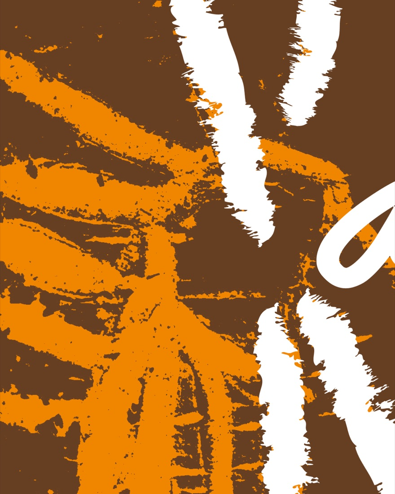
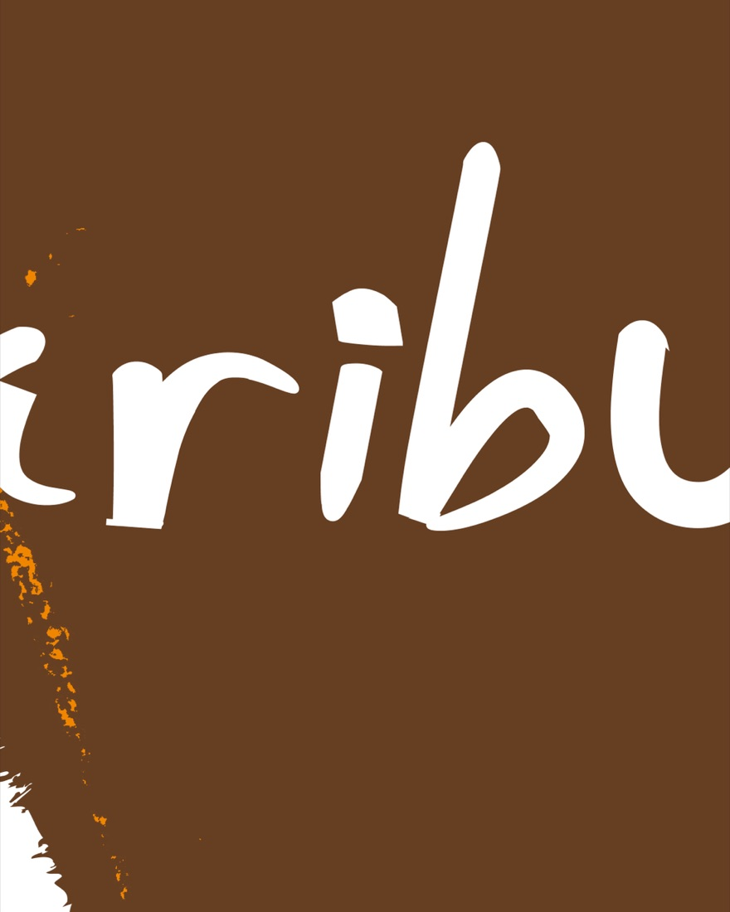
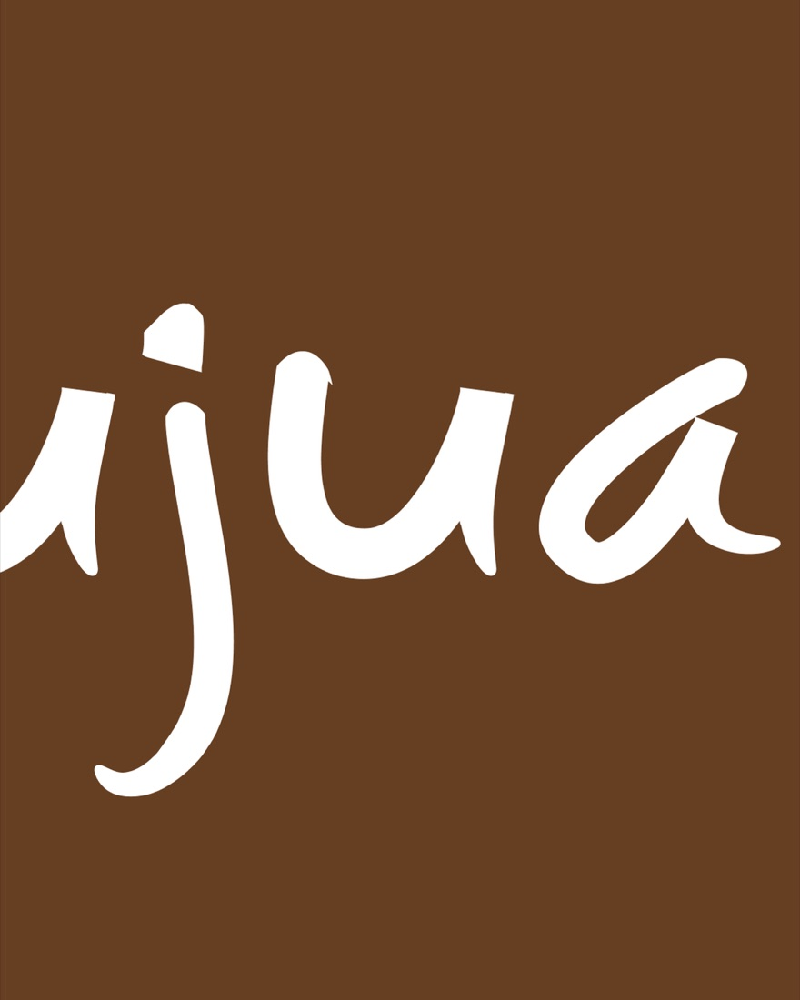

Karibujua
Branding e campagneHo gestito la comunicazione visiva di Karibujua, un’Associazione di promozione sociale dedicata allo sviluppo dell’istruzione in Kenya e alla promozione dell’incontro tra culture.
In qualità di Art Director Junior, ho curato la strategia e la produzione di contenuti originali per i canali social, con l’obiettivo di raccontare l’anima dell’associazione, favorire lo scambio interculturale e accrescere la visibilità online dell’organizzazione.



Successivamente mi è stato chiesto di sviluppare contenuti diversi: post istituzionali, racconti degli studenti, storie dal territorio e contenuti dedicati ai volontari di Karibujua.